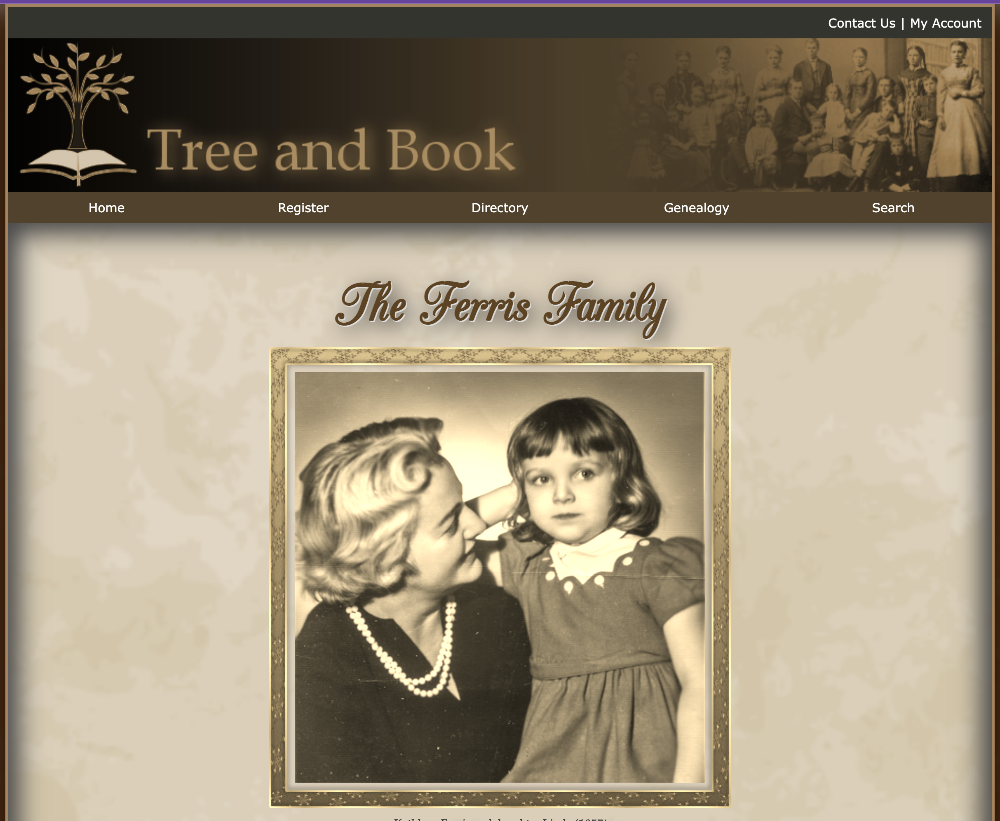

Mobile Panini
1-2: HTML Try It Out
March 11, 2024
↠ Topics Applied ↞
- HTML Structure
- Lists
- Lists as Navigation
- linking telephone numbers and email
I enjoyed learning all about lists and how to style them. Particularly data lists. I gained a more complete knowledge of navigation and how to use it to create a more user-friendly experience.
Mountain Wheels
1-4: CSS Try It Out
March 13, 2024
↠ Topics Applied ↞
- CSS Styling
- Transforming text
- Using symbols
- Pseudo-classes and Pseudo-elements
I loved the opportunity to build on what we have already learned and delve deeper into more complex styling. I particularly enjoyed pseudo-classes and pseudo-elements. This assignment gave us lots of experience styling links, which I enjoyed.
March Specials
2-2: CSS Layout Try It Out
March 22, 2024
↠ Topics Applied ↞
- CSS Layout
- Border Box-Model
- Grids
- Position
Great opportunity to apply what I learned in the Learning Activity. Seeing unstyled content gradually turn into a beautifully styled webpage was very satisfying.
DLR Morning Schedule
2-4: HTML Tables Try It Out
March 23, 2024
↠ Topics Applied ↞
- Table Structure
- Table Styling
- Colspan and Rowspan
- Table Content
Great opportunity to apply what I learned in the Learning Activity. Seeing unstyled content gradually turn into a beautifully styled webpage was very satisfying.
Ferris Family
3-2: Graphic Design: Try It Out
March 23, 2024

↠ Topics Applied ↞
- Background Image/Color
- Image Map
- Border
- Shadows (Box/Text)
Deeper dive into transform, rotate, scale, backgrounds, borders etc.
Customer Info and Build Your Pizza
3-5: Forms: Try It Out
April 16, 2024
↠ Topics Applied ↞
- Fieldsets
- Inputs and Labels
- Select, textarea, radio buttons...
- Form Validation (with styling)
More practice building forms. Using fieldsets, legends, textarea, checkboxes, radio buttons as well as submission buttons. I really enjoy watching all the small pieces we build fit into a larger picture.